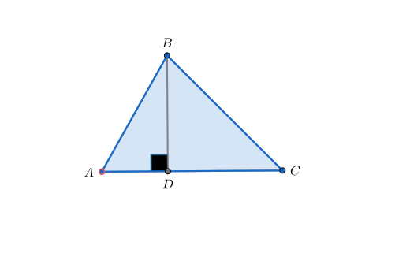
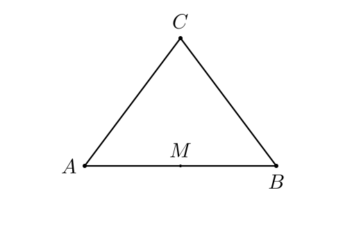
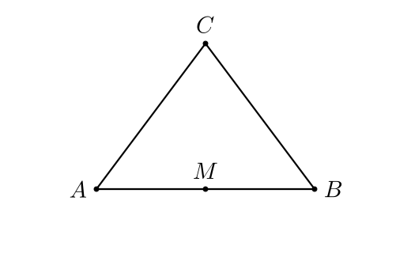

§4 · Загрузка из GeoGebra
.ggb-файл — ZIP с XML-описанием конструкции плюс превью-изображения.
AnimaGeo распаковывает его, парсит XML в список команд, строит
Construction и применяет стили. При необходимости — через ImportPolicy
вы можете перезадать, как именно значения из файла превращаются в стили:
отмасштабировать размеры, квантовать толщины, сменить палитру, унифицировать
шрифт, скрыть подписи — всё одним JSON-объектом.
Формат .ggb
Файл .ggb — обычный ZIP. Внутри:
geogebra.xml ← главный файл: конструкция + стили + view
geogebra_defaults.xml ← дефолты, могут отсутствовать
geogebra_thumbnail.png ← превью для файлового менеджераgeogebra.xml содержит три интересующих AnimaGeo блока:
<construction>— упорядоченный список команд (Point,Segment,Intersect, ...) с именами, выражениями и базовыми стилями.<euclidianView>— текущий viewport (xmin/xmax, ymin/ymax) и размер шрифта.<element>...<label>— позиция подписи относительно элемента в экранных пикселях.
AnimaGeo читает всё необходимое и ничего не пишет в .ggb — это read-only импорт.
Формулы и числа при импорте
Формулы функций, коник, прямых и неявных кривых разбираются безопасным
парсером (текст из файла проверяется как выражение и вычисляется без встроенных функций Python) и следуют за числами
построения: слайдерами, измерениями (Radius, Distance,
Area, Angle), флажками, координатами точек
(x(A), y(A)) и другими функциями. При изменении числа
кривая перестраивается, поэтому кадр и видео двигаются вместе с аплетом.
Коника или прямая сохраняют кривую из файла, если их уравнение её не воспроизводит.
Point(path, t)с числомtстроится с параметром GeoGebra:tпробегает[0, 1](с отсечением); на отрезке — доля от A к B, на окружности и эллипсе — угол−π … π, на графике функции — x-диапазон вида из файла.- Скобки в координатах точки —
(0, 1/(4a))— и векторные выражения во входах команд (Translate(P, a*u)) строятся и следуют за числами. Dilate,TranslateиReflectотносительно точки работают для функций, коник и неявных кривых;RotateиReflectотносительно прямой — только для коник.- Имена с суффиксом
°(напримерK°) нормализуются; как числовая переменная вRotateK°читается как угол.
Объект, который не может следовать за числами, не «замерзает» молча, а
попадает в scene.geo.command_diagnostics с причиной
parametric_dependency_frozen; формула, которую не удалось прочитать, —
с expression_parse_error.
loadGGB
Самый короткий путь — загрузить файл и экспортировать:
from animageo.animageo import AnimaGeoScene
class Scene(AnimaGeoScene):
def construct(self):
self.loadGGB('problem.ggb',
style_file='my_style.json',
px_size=[800, 600])
self.exportSVG('problem.svg')
Scene().construct()Сигнатура:
loadGGB(filepath,
style_file = None, # путь к JSON-стилю
px_size = None, # [width, height] в пикселях
import_policy = None, # см. ImportPolicy ниже
debug = False, # подробный лог парсинга
generate_stubs = True, # записать <basename>_stubs.pyi для IDE
strict = False) # unsupported-команды: diagnostics или ошибкаloadGGB делает четыре вещи:
- Распаковывает ZIP, парсит
geogebra.xml(parsers/ggb_parser.py). - Строит Construction и сразу вызывает
rebuild(full=True)— все зависимости пересчитываются. - Применяет стили из
style_fileплюсImportPolicyповерх. - Добавляет геометрию в сцену через
addAllGeometry(show=True). При включённомoverlay.label_placementсразу запускаетautoPlaceLabels().
Если часть команд GeoGebra не поддержана, обычный режим не печатает cascade
warning-и от зависимых NoneType. Root-команды доступны в
scene.geo.command_diagnostics; при strict=True первая
root unsupported-команда становится исключением.
scene.loadGGB('problem.ggb', strict=False)
scene.geo.command_diagnostics
# [{'command': 'Sub', 'signature': ['str', 'AngleSize'],
# 'outputs': ['_3'], 'reason': 'unsupported_signature',
# 'dependents': [...]}]Аудит покрытия GeoGebra-команд ведётся отдельно: docs/geogebra_command_audit.md.
loadGGB все элементы уже в сцене. В отличие от putCode,
отдельного вызова addAllGeometry делать не нужно.
.ggb как источника
from animageo.animageo import AnimaGeoScene
class Scene(AnimaGeoScene):
def construct(self):
# Треугольник, построенный в GeoGebra, загружается вместе со всеми
# стилями из XML. Политика по умолчанию — faithful (byte-for-byte).
self.loadGGB(
'sample_triangle.ggb',
style_file='guide_style.json',
px_size=[520, 340],
)
# Поверх GGB-стилей дорисовываем один акцент:
self.element('A').style['stroke'] = '#f15b5b'
self.element('A').style['stroke_width_px'] = 1.6
self.exportSVG('sample_triangle.svg')
Конвенция: ggb-файлы, сопровождающие иллюстрации гайда,
лежат в docs/guide/assets/ggb/ и доступны по относительному пути
assets/ggb/<name>.ggb. Download-кнопка добавляется вручную в
<div class="ex-downloads">, когда пример берёт начало из
GeoGebra-файла, — так читатель может открыть его у себя и увидеть
исходное построение.
ggb_raw, ggb_style и elem.style
В момент парсинга каждый элемент получает отдельные словари исходника и нормализованного import-layer:
| Словарь | Когда заполняется | Что хранит |
|---|---|---|
elem.ggb_raw | в парсере, из XML | исходные значения: point_size=5, line_thickness=3, arc_size=30, label_offset_px=(12, -14), obj_color.hex='#1565c0', obj_color.opacity=0.1 |
elem.ggb_style | парсер + applyStyle/ImportPolicy | адаптированные GGB visual keys: size_px, stroke_width_px, arc_size_px, label_offset_px, stroke, point_shape |
elem.style | DSL/API | явные per-element overrides, которые выигрывают у overlay, GGB import и defaults |
Правило: ggb_raw — то, что было в файле,
ggb_style — во что это адаптировал GGB import, а итоговое
значение для рендера даёт resolver.
ggb_raw кэшируется — достаточно одного loadGGB, чтобы потом
любое количество раз применять разные политики без перепарсинга XML. Это
scene.reloadPolicy(new_policy) — см. ниже.
ImportPolicy
ImportPolicy — dataclass со списком правил, как
конвертировать ggb_raw в elem.ggb_style. Без него работает
faithful-режим: значения из файла попадают в рендер как есть
(с pixel-invariance через ptUnit, но без переопределений).
Три самых частых сценария:


size_px=5 — все одинаковоfrom animageo.style.import_policy import ImportPolicy
# 1. унификация — все точки одного размера
policy = ImportPolicy(size_px=5, font_size_px=14)
scene.loadGGB('problem.ggb', style_file='s.json', px_size=[800, 600],
import_policy=policy)
# 2. scale: помножить на коэффициент
policy = ImportPolicy(size_px=lambda raw, d, e: raw * 1.5)
# 3. полностью игнорировать .ggb-стили, использовать только style.json
policy = ImportPolicy.style_only()Параметры (все опциональны — что не задано, берётся из faithful-режима):
| Поле | Принимает | Действует на |
|---|---|---|
size_px | число, callable или DSL-строка | elem.ggb_style['size_px'] точек |
stroke_width_px | число, callable или DSL-строка | stroke_width_px сегментов, линий, лучей |
stroke_opacity | число, callable или DSL-строка | stroke_opacity из line_opacity |
stroke_dash_ratio | число, callable или DSL-строка | stroke_dash_ratio из line_type |
font_size_px | число | font_size_px подписей |
label_color | hex-строка | label_color |
label_text | строка или DSL | label_text |
visible | bool или DSL | visible через resolver |
stroke | hex или DSL | stroke |
fill | hex или DSL | fill |
arc_size_px | число или callable | arc_size_px |
angle_range | minor/reflex или DSL | angle_range |
tick_count | число или DSL | tick_count |
Mini-DSL для значений политик
Строковые значения политик поддерживают мини-DSL. Четыре префикса:
| Префикс | Синтаксис | Что делает |
|---|---|---|
const: | "const:5" | Константа — удобно, когда тип поля иначе неоднозначен. |
scale: | "scale:1.5" | Умножить raw-значение на коэффициент. |
quantize: | "quantize:[1,2,4]" | Приблизить raw к ближайшему элементу списка. Хорошо для толщин линий. |
remap: | "remap:{'#1565c0':'#0066cc'}" | Словарь-замена. Точное совпадение raw → value. |
Пример — политика, подгоняющая .ggb-файлы под свою фирменную палитру:
policy = ImportPolicy(
stroke="remap:{'#1565c0':'#0066cc', '#d32f2f':'#cc3300'}",
fill="remap:{'#1565c0':'#0066cc', '#d32f2f':'#cc3300'}",
label_color="remap:{'#1565c0':'#0066cc', '#d32f2f':'#cc3300'}",
stroke_width_px="quantize:[1,2,4]",
font_size_px=14,
)Python-callable
Для сложной логики — обычная функция. Подпись: (raw, defaults, elem):
def point_size(raw, d, e):
# В .ggb большие точки (≥6) — оставляем как есть,
# маленькие — подтягиваем до 4, чтобы не терялись на экспорте.
return max(raw, 4) if raw else d.get('size_px', 4)
policy = ImportPolicy(size_px=point_size)Типы и имена через overlay
Если нужен контроль по типу или имени элемента, это не import policy,
а слой overlay. Он применяется поверх GGB-адаптации и работает
одинаково для GGB и DSL:
{
"overlay": {
"per_type": {
"point": {"fill": "#000", "stroke_width_px": 0.8},
"segment": {"stroke": "#333"},
"angle": {"font_size_px": 11, "arc_size_px": 22}
},
"per_name": {
"A": {"size_px": 8, "label_color": "#f15b5b"},
"O": {"fill": "#ffffff"}
}
}
}Порядок приоритетов (от низкого к высокому):
- Дефолты из
style_file(JSON-стиль) - ImportPolicy — верхнеуровневые поля
- Overlay —
per_type - Overlay —
per_name - Прямая правка из Python:
scene.element('A').style[...] = ...
reloadPolicy — без перепарсинга
Частый сценарий: подобрать политику под один и тот же файл. Каждый
раз перечитывать XML — накладно; ggb_raw уже есть в памяти.
scene = Scene()
scene.loadGGB('problem.ggb', style_file='s.json', px_size=[800, 600],
import_policy=None) # faithful
# посмотрели — решили унифицировать шрифт:
scene.reloadPolicy(ImportPolicy(font_size_px=14))
scene.exportSVG('v2.svg')
# потом — квантовать толщины:
scene.reloadPolicy(ImportPolicy(stroke_width_px="quantize:[1,2,4]",
font_size_px=14))
scene.exportSVG('v3.svg')Внутри reloadPolicy берёт elem.ggb_raw и накладывает
новые policy-overrides поверх текущего elem.ggb_style, не перечитывая
XML. Это быстрый layered override: если предыдущая политика уже записала
ключ, а новая его не задаёт, старое значение останется. Для чистой замены
политики перечитайте файл через loadGGB(..., import_policy=...) или
передавайте в reloadPolicy полный набор активных override-ключей.
Политики внутри JSON-стиля
Если политика не меняется между запусками, удобнее положить её
прямо в файл стиля — под ключ import.policy:
// brand_style.json
{
"presets": { "color": { "main": "#0066cc", "accent": "#d05456" } },
"defaults": { "point": {"size_px": 8}, "line": {"stroke_width_px": 2} },
"overlay": { "label_placement": {"enabled": true} },
"import": {
"policy": {
"stroke": "remap:{'#1565c0':'#0066cc'}",
"stroke_width_px": "quantize:[1,2,4]",
"font_size_px": 14
}
},
"overlay": {
"per_type": {
"point": {"fill": "#000"},
"angle": {"font_size_px": 11}
}
}
}scene.loadGGB('problem.ggb', style_file='brand_style.json',
px_size=[800, 600])
# ImportPolicy из JSON подхватится автоматическиГотовые пресеты лежат в репозитории в examples/policies/:
faithful.json, flat_black.json, no_labels.json,
quantized.json, brand_colors.json. Каждый — законченный
JSON-стиль со своей политикой, можно копировать и править под себя.
Рецепты
Унифицировать все подписи
ImportPolicy(font_size_px=14, label_color='#1a1a1a')Полезно, когда в .ggb у каждого автора свой размер шрифта.
Увеличить размеры в полтора раза
ImportPolicy(
size_px="scale:1.5",
stroke_width_px="scale:1.5",
font_size_px="scale:1.2",
)Пропорциональное увеличение — полезно при экспорте в 2× для retina-дисплеев (см. §10).
Выключить все подписи
{
"overlay": {
"per_type": {
"point": {"label_visible": false},
"segment": {"label_visible": false},
"angle": {"label_visible": false}
}
}
}Для аксонометрических чертежей или тех, где подписи добавляются поверх — например, подписи переводятся на другой язык в векторном редакторе.
Сделать точки кольцами вместо дисков
{
"overlay": {
"per_type": {
"point": {
"fill": "#ffffff",
"stroke": "#000000",
"stroke_width_px": 1.4
}
}
}
}Фильтр «школьный учебник»
ImportPolicy(
stroke="#000000", # всё чёрным
fill="#ffffff", # без цветных заливок
label_color="#000000",
stroke_width_px="quantize:[1,2]",
font_size_px=12,
)А единое оформление углов добавьте поверх импорта:
{
"overlay": {
"per_type": {
"angle": {"arc_size_px": 24}
}
}
}loadGGB.
Запустите рецепты из этого раздела как standalone-скрипты
(python3.13 my_scene.py) — эффекты увидите мгновенно. Поддержка
интерактива для loadGGB — в планах.